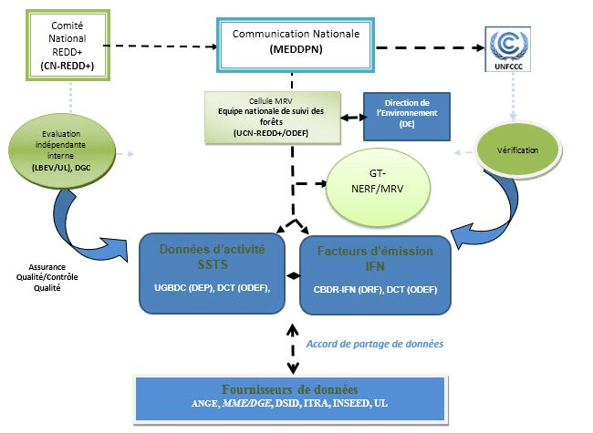

1.1 Arrangements institutionelles
L’arrangement institutionnel propose pour le système national de suivi des forêts se presente comme ci-dessous.

Coordination:
Le Ministère de l’Environnement, du Developpement Durable et de la Protection de la Nature (MEDDPN) à travers la Direction de l’Environnement (DE) est chargée de la soumission des rapports (Communication Nationale et Rapports Biennaux) à la Convention Cadre des Nations Unies sur le Changement Climatique (CCNUCC).
La Cellule MRV de la Coordination nationale REDD+ située a l’ODEF est responsable de la coordination de toutes les institutions et organisations impliquées dans l’alimentation du système SNSF. Cette cellule est l’entité clé chargée de faciliter et de soutenir les communications sur NRF/NERF du Togo.
Le Groupe de travail NERF/MRV et l’équipe nationale de suivi des forêts sont chargés du travail et des décisions et choix techniques sur les données, résultats et méthodologie adoptés pour le NRF/MRV. C’est la cheville ouvrière de la cellule MRV. Elles sont constituées des cadres des institutions qui interviennent dans le système national de suivi des forêts (SNSF).
La Direction de l’Environnement (DE) se charge des inventaires de gaz à effet de serre (I-GES) de tous les secteurs mais assure la cohérence des données d’I-GES du secteur agriculture, foresterie et autres affectations des terres (AFAT) avec les rapports qui seront soumis à la CCNUCC. La DE se chargera d’assurer la cohérence entre la méthodologie utilisée dans le cadre du NRF avec les données d’I-GES du secteur AFAT.
Données d’activités:
L’Unité de gestion de bases de données cartographiques (UGBDC) de la Direction des études et de la planification (DEP), chargée de la gestion de la cartographie des domaines forestiers du Togo ainsi que la Division cartographie et Télédétection (DCT) de l’Officie de développement et d’exploitation des forêts (ODEF) chargée de la cartographie des forêts classées et plantations étatique se chargeront de produire les données d’activités à travers le système de suivi des terres par satellite (SSTS).
L’Agence nationale de gestion de l’environnement (ANGE) est chargée de fournir les données sur les feux de végétation.
Facteurs d’émission:
- La cellule de gestion de la base des données des ressources forestières et des résultats de l’inventaire forestier national (CBDR-IFN) de la Direction des ressources forestières (DRF) et la Division cartographie et télédétection (DCT) de l’ODEF sont chargé de produire les facteurs d’émission à travers les inventaires forestier nationaux et les inventaires des plantations.
Données complémentaires:
la Direction générale de l’énergie du ministère des mines et énergie DGE/MME se chargera de fournir les données sur la consommation en bois énergie.
la Direction de la Statistique agricole de l’Informatique et de la Documentation (DCID) et l’Institut Togolais de Recherche Agronomique (ITRA) produiront des données sur l’agriculture (superficie emblavées et le cheptel).
les données de recherche des universités du Togo alimenteront le mécanisme MRV ainsi que le NRF.
L’Institut national de la statistique et des études économiques et démographiques (INSEED) donnera des compléments d’informations sur la démographie et autres.
Contrôle de qualité / validation interne:
- L’assurance qualité et le contrôle qualité se fera à travers l’évaluation indépendante interne du Laboratoire de biologie et écologie végétale (LBEV) et le Laboratoire de recherche forestière (LRF) de l’université de Lomé (LBEV/UL) ainsi que la Direction générale de la cartographie (DGC). Les laboratoires universitaires LRF et LBEV évalueront les méthodes et nouveaux données au fur et à mesure qu’ils seront générés.